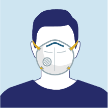
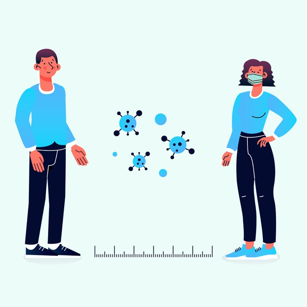

Lávese las manos con frecuencia. Use agua y jabón o un desinfectante de manos a base de alcohol.
Beneficios de lavarse las manos
Si tuviste contacto con algún infectado de coronavirus o tocaste algún objeto previamente infectado por alguien, basta con lavarte las manos. Si lo haces de manera correcta, es así de sencillo eliminar al responsable de la reciente pandemia. Un desinfectante a base de alcohol o jabón y agua, son los mejores aliados contra el causante del COVID-19. La razón es que las manos cargan con casi todos los gérmenes que terminan en el tracto respiratorio. Su limpieza es esencial para la buena salud, tanto en tiempos de pandemia como en la vida cotidiana. Si se mantiene su higiene de manera correcta, la transmisión de coronavirus se reducirá de manera drástica, aseguran numerosos médicos.
Fue durante el siglo XIX que la medicina confirmó la importancia de este hábito. Como ejemplo, está doctor húngaro Ignaz Semmelweis, quien en 1847, instauró un sistema para reducir la mortalidad en salas de maternidad. Su idea consistía en una cuenca con una solución de cal clorada en el Hospital General de Viena. Con sólo pedirle a las mujeres que se lavaran las manos, redujo en un 18.3% la tasa de mortalidad. Se dice que el lavado eficiente debe durar 20 segundos. Se debe tallar enérgicamente palmas, dorso, muñecas y entre los dedos, lo más recomendado es jabón líquido. Hay que enjuagarse y secarse muy bien, pues los gérmenes prefieren los ambientes húmedos. Si sigues estos pasos, encontrarás los siguientes beneficios.

Utilizar Tapabocas
Se recomienda usar un tapabocas N95
OMS anunció cambios al protocolo sobre el tipo y uso del tapabocas
Las nuevas disposiciones de la OMS sobre cómo portar el tapabocas se enfocaron en que los gobiernos “deberían alentar al público en general a usar máscaras donde hay una transmisión generalizada” y, sobre todo, en lugares donde “es difícil el distanciamiento físico, como en el transporte público, en tiendas o en otros entornos confinados o abarrotados”.
La entidad sugirió que el uso del tapabocas debería ser permanente en las zonas en las que el coronavirus tenía más posibilidad de circulación debido a la gran afluencia de gente, asegurando que estas mascarillas proveen “una barrera para las gotitas potencialmente infecciosas”.
“Estamos preocupados de que el uso de mascarillas médicas en la población general puede exacerbar la falta de material para la gente que más lo necesita”, pero la OMS ha revaluado el uso amplio de mascarillas para la población y consideramos que puedan ser utilizadas en comunidades donde sea difícil tomar otras medidas como el lavado de manos o mantener la distancia de seguridad”, expresó Tedros Adhanom
Taparse la boca al Toser
Cuando tosa o estornude, cúbrase la nariz y la boca con el codo flexionado o con un pañuelo.
Estos son los motivos por los que debes taparte la boca con el codo cuando toses o estornudas
Las manos es una de las partes del cuerpo que más utilizamos. Para coger alimentos, acariciar a otras personas y realizar infinidad de actividades. Taparse la boca con ellas cuando estornudamos o tosemos, también es un gesto muy habitual que puede provocar la expansión de los gérmenes.
Según un estudio realizado por científicos del Instituto Tecnológico de Massachusetts (MIT), las partículas potencialmente infecciosas tienen capacidad de viajar por el aire distancias que pueden alcanzar hasta los 4 o 6 metros provocando que la mayoría de virus respiratorios se transmitan al hablar, respirar y muy especialmente al toser o estornudar.

Distanciamiento Social
Manténgase a una distancia segura de cualquier persona que tosa o estornude.
¿Por qué practicar el distanciamiento social?
El COVID-19 se propaga principalmente entre personas que están en contacto cercano (dentro de 6 pies aproximadamente) por un período prolongado. La propagación ocurre cuando una persona infectada tose, estornuda o habla, y las gotitas de su boca o nariz se expulsan al aire y terminan en la boca o nariz de las personas cercanas. Estas gotitas también pueden inhalarse y entrar en los pulmones. Estudios recientes indican que las personas que están infectadas pero no tienen síntomas probablemente también juegan un rol en la propagación del COVID-19. Como las personas pueden propagar el virus antes de saber que están enfermas, es importante mantener una distancia de al menos 6 pies de otras personas siempre que sea posible, incluso si usted o esas personas no tienen síntomas. El distanciamiento social es especialmente importante para las personas con mayor riesgo de enfermarse gravemente a causa del COVID-19.
Si tiene COVID-19, síntomas que concuerdan con los del COVID-19, o si estuvo en contacto cercano con una persona con COVID-19, es importante que se quede en su casa y alejado de otras personas hasta que sea seguro finalizar el aislamiento o la cuarentena.
El COVID-19 puede vivir por horas o días sobre una superficie según factores como la luz solar, la humedad y el tipo de superficie. Podría ser posible que una persona contraiga el COVID-19 al tocar una superficie u objeto que tenga el virus y luego se toque la boca, la nariz o los ojos. Sin embargo, no se cree que esta sea la principal forma en que se propaga el virus. El distanciamiento social ayuda a limitar las oportunidades de entrar en contacto con superficies contaminadas y personas infectadas fuera de la casa.
Aunque el riesgo de enfermarse gravemente puede ser diferente para cada uno, cualquier persona puede contraer y propagar el COVID-19. Todos tenemos un rol que cumplir para desacelerar la propagación y protegernos a nosotros mismos, nuestra familia y nuestra comunidad. Además de tomar las medidas cotidianas para prevenir el COVID-19, mantener distancia con respecto a otras personas es una de las mejores herramientas que tiene para evitar exponerse al virus y desacelerar su propagación en las comunidades.
Llamar a la linea de emergencía
Si tiene fiebre, tos y dificultad para respirar, solicite atención médica. Llame con antelación.
Línea telefónica de asistencia por países
En el siguiente link encontrarás el respectivo número de linea de atención: